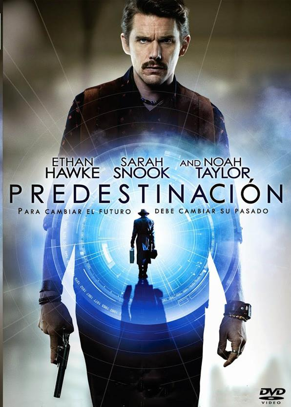
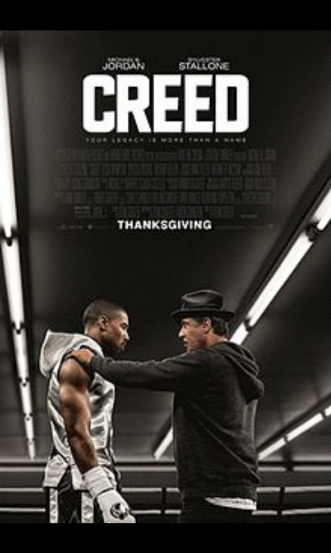
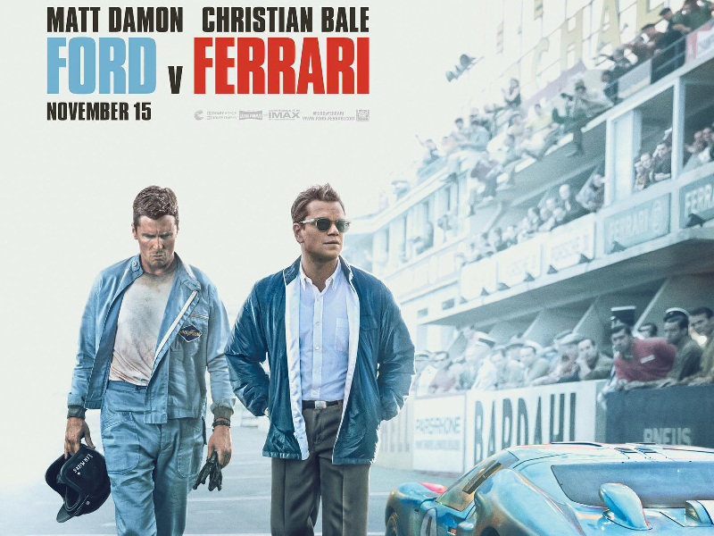
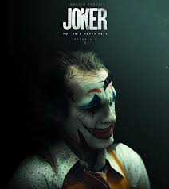

5.1: Arrival
Ratings : 🌟 7.9
Genre :DramaSci-Fi
Release Date : 11 November 2016
Watch-Time : 1h 56min.
Director : Denis Villeneuve
Starring : Amy Adams, Jeremy Renner, Forest Whitaker, Michael Stuhlbarg, Tzi Ma
Box-Office : $203.4 million
Storyline:
Linguistics professor Louise Banks leads an elite team of investigators when gigantic spaceships touchdown in 12 locations around the world. As nations teeter on the verge of global war, Banks and her crew must race against time to find a way to communicate with the extraterrestrial visitors. Hoping to unravel the mystery, she takes a chance that could threaten her life and quite possibly all of mankind.
5.2: Predestination
Ratings : 🌟 7.5
Genre : ActionDramaSci-Fi
Release Date : 9 January 2015
Watch-Time : 1h 37min.
Director : Michael Spierig
Starring : Ethan Hawke, Sarah Snook, Noah Taylor
Box-Office : $5.4 million
Storyline:
PREDESTINATION chronicles the life of a Temporal Agent sent on an intricate series of time-travel journeys designed to ensure the continuation of his law enforcement career for all eternity. Now, on his final assignment, the Agent must pursue the one criminal that has eluded him throughout time.
4.1: Creed
Ratings : 🌟 7.6
Genre : DramaSport
Release Date : 25 November 2015
Watch-Time : 2h 13min.
Director : Ryan Coogler
Starring : Michael B. Jordan, Sylvester Stallone, Tessa Thompson, Phylicia Rashad, Anthony Bellew
Box-Office : $173.6 million
Storyline:
Adonis Johnson is the son of the famous boxing champion Apollo Creed, who died in a boxing match in Rocky IV (1985). Adonis wasn't born until after his father's death and wants to follow his fathers footsteps in boxing. He seeks a mentor who is the former heavyweight boxing champion and former friend of Apollo Creed, the retired Rocky Balboa. Rocky eventually agrees to mentor Adonis. With Rocky's help they hope to get a title job to face even deadlier opponents than his father.
4.2: Ford v Ferrari
Ratings : 🌟 8.1
Genre : ActionBiographyDrama
Release Date : 15 November 2019
Watch-Time : 2h 32min.
Director : James Mangold
Starring : Matt Damon, Christian Bale, Jon Bernthal
Box-Office : $225.5 million
Storyline:
As Enzo Ferrari's fast Rosso-Corsa racing cars dominate the mid-1960s motorsport world, the American car designer, Carroll Shelby, is forced to retire after winning the demanding 1959 '24 Hours of Le Mans' endurance race. But, before long, an unexpected proposition by the Vice President of Henry Ford's motor company, Lee Iacocca, will offer an opportunity to beat the Italians at their own game. Now, under those pressing circumstances, the British sports car driver and racing engineer, Ken Miles, reluctantly agrees to lend a hand and improve the firm's image, as Ford's race team has less than ninety days to rewrite history. As a result, the non-conformist duo comes up with the mighty Ford GT40 Mk I high-performance racing car. Can Shelby and Miles break Ferrari's streak?
3.1: Million Dollar Baby
Ratings : 🌟 8.1
Genre : ADramaSport
Release Date : 28 January 2005
Watch-Time : 2h 12min.
Director : Clint Eastwood
Starring : Clint Eastwood, Hilary Swank, Morgan Freeman
Box-Office : $216.8 million
Storyline:
Wanting to learn from the best, aspiring boxer Maggie Fitzgerald (Hilary Swank) wants Frankie Dunn (Clint Eastwood) to train her. At the outset, he flatly refuses saying he has no interest in training a girl. Frankie leads a lonely existence, alienated from his only daughter and having few friends. Maggie's rough around the edges, but shows a lot of grit in the ring and he eventually relents. Maggie not only proves to be the boxer he always dreamed of having under his wing, but a friend who fills the great void he's had in his life. Maggie's career skyrockets, but an accident in the ring leads her to ask Frankie for one last favor.
3.2: Prisoners

Ratings : 🌟 8.1
Genre : DramaMsteryCrime
Release Date : 20 September 2013
Watch-Time : 2h 33min.
Director : Denis Villeneuve
Starring : Hugh Jackman, Jake Gyllenhaal, Viola Davis, Maria Bello, Terrence Howard, Melissa Leo, Paul Dano
Box-Office : $122.1 million
Storyline:
How far would you go to protect your family? Keller Dover is facing every parent's worst nightmare. His six-year-old daughter, Anna, is missing, together with her young friend, Joy, and as minutes turn to hours, panic sets in. The only lead is a dilapidated RV that had earlier been parked on their street. Heading the investigation, Detective Loki arrests its driver, Alex Jones, but a lack of evidence forces his release. As the police pursue multiple leads and pressure mounts, knowing his child's life is at stake the frantic Dover decides he has no choice but to take matters into his own hands. But just how far will this desperate father go to protect his family?
2.1: Parasite

Ratings : 🌟 8.6
Genre : ComedyDramaThriller
Release Date : 8 November 2019
Watch-Time : 2h 12min.
Director : Bong Joon Ho
Starring : Song Kang-ho, Lee Sun-kyun, Cho Yeo-jeong, Choi Woo-shik, Park So-dam, Lee Jung-eun, Jang Hye-jin
Box-Office : $258.8 million
Storyline:
The Kims - mother and father Chung-sook and Ki-taek, and their young adult offspring, son Ki-woo and daughter Ki-jung - are a poor family living in a shabby and cramped half basement apartment in a busy lower working class commercial district of Seoul. Without even knowing it, they, especially Mr. and Mrs. Kim, literally smell of poverty. Often as a collective, they perpetrate minor scams to get by, and even when they have jobs, they do the minimum work required. Ki-woo is the one who has dreams of getting out of poverty by one day going to university. Despite not having that university education, Ki-woo is chosen by his university student friend Min, who is leaving to go to school, to take over his tutoring job to Park Da-hye, who Min plans to date once he returns to Seoul and she herself is in university. The Parks are a wealthy family who for four years have lived in their modernistic house designed by and the former residence of famed architect Namgoong.
2.2: Joker
Ratings : 🌟 8.5
Genre : CrimeDramaThriller
Release Date : 4 October 2019
Watch-Time : 2h 2min.
Director : Todd Phillips
Starring : Joaquin Phoenix, Robert De Niro, Zazie Beetz, Frances Conroy
Box-Office : $1.074 billion
Storyline:
Arthur Fleck works as a clown and is an aspiring stand-up comic. He has mental health issues, part of which involves uncontrollable laughter. Times are tough and, due to his issues and occupation, Arthur has an even worse time than most. Over time these issues bear down on him, shaping his actions, making him ultimately take on the persona he is more known as...Joker.
1.1: The Wolf of Wall Street

Ratings : 🌟 8.2
Genre : BiographyDramaCrime
Release Date : 25 December 2013
Watch-Time : 3h.
Director : Martin Scorsese
Starring : Leonardo DiCaprio, Jonah Hill, Margot Robbie, Matthew McConaughey, Kyle Chandler, Rob Reiner, Jon Favreau, Jean Dujardin
Box-Office : $392 million
Storyline:
In the early 1990s, Jordan Belfort teamed with his partner Donny Azoff and started brokerage firm Stratford-Oakmont. Their company quickly grows from a staff of 20 to a staff of more than 250 and their status in the trading community and Wall Street grows exponentially. So much that companies file their initial public offerings through them. As their status grows, so do the amount of substances they abuse, and so do their lies. They draw attention like no other, throwing lavish parties for their staff when they hit the jackpot on high trades. That ultimately leads to Belfort featured on the cover of Forbes Magazine, being called "The Wolf Of Wall St.". With the FBI onto Belfort's trading schemes, he devises new ways to cover his tracks and watch his fortune grow. Belfort ultimately comes up with a scheme to stash their cash in a European bank. But with the FBI watching him like a hawk, how long will Belfort and Azoff be able to maintain their elaborate wealth and luxurious lifestyles?
1.2: The Shawshank Redemption

Ratings : 🌟 9.3
Genre : Drama
Release Date : 14 October 1994
Watch-Time : 2h 22min.
Director : Frank Darabont
Starring : Tim Robbins, Morgan Freeman, Bob Gunton, William Sadler, Clancy Brown, Gil Bellows, James Whitmore
Box-Office : $58.3 million
Storyline:
Chronicles the experiences of a formerly successful banker as a prisoner in the gloomy jailhouse of Shawshank after being found guilty of a crime he did not commit. The film portrays the man's unique way of dealing with his new, torturous life; along the way he befriends a number of fellow prisoners, most notably a wise long-term inmate named Red.